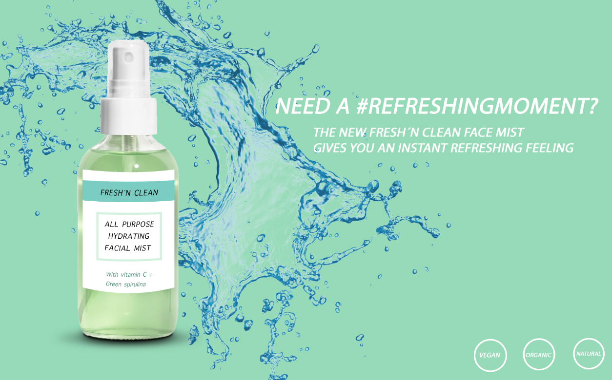

Farvepalette
Teksture
Indhold indtil videre
Typografi
Overskrift eksempel
Font Family, Franklin Gothic Medium
Underoverskrift eksempel
Font Family, Franklin Gothic Medium
This sample paragraph has strong parts and emphasized parts. Vestibulum tortor quam, feugiat vitae, ultricies eget, tempor sit amet, ante. Donec eu libero sit amet quam egestas semper. Aenean ultricies mi vitae est. Mauris placerat eleifend leo. Pellentesque habitant morbi tristique senectus et netus et malesuada fames ac turpis egestas.
Font Family, Franklin Gothic Medium
Symboler
Adjectives
- Ungt
- Simpelt
- Insta
- Rent